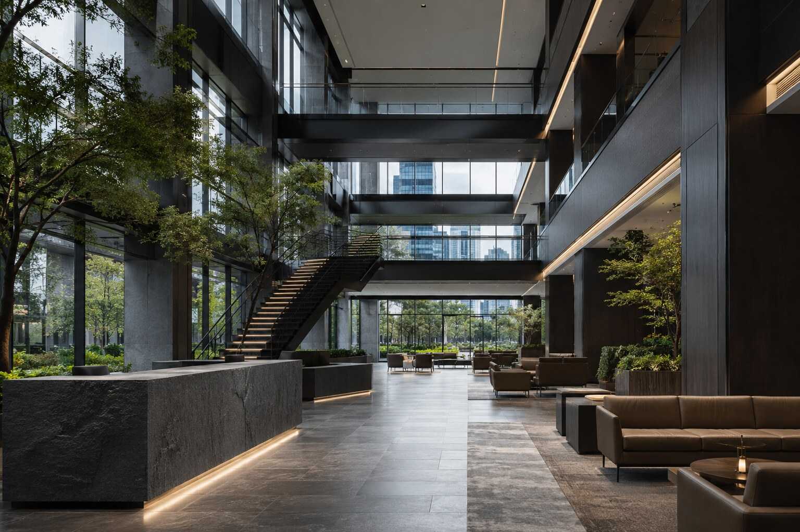

SELECTED WORKPLACE / 07
센텀 이그제큐티브CENTUM EXECUTIVE CAMPUS
업무와 교류, 휴식의 밀도를 다층 아트리움으로 엮은 프리미엄 기업 본사.
VIEW PROJECT07PROJECT OVERVIEW
업무의 속도와 휴식의 밀도를 함께 설계하다.
그래파이트 스톤과 스모크드 오크, 블랙 스틸의 무게감에 성숙한 실내 조경을 더했습니다. 메인 아트리움과 업무층, 보드룸, 타운홀과 루프탑까지 조직의 다양한 활동이 하나의 건축 언어 안에서 이어집니다.
PROJECT GALLERY
공간의 장면들